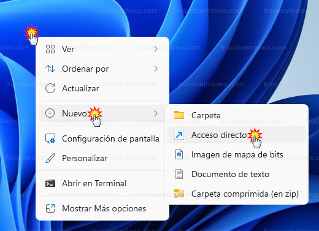
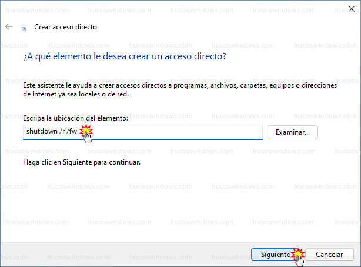
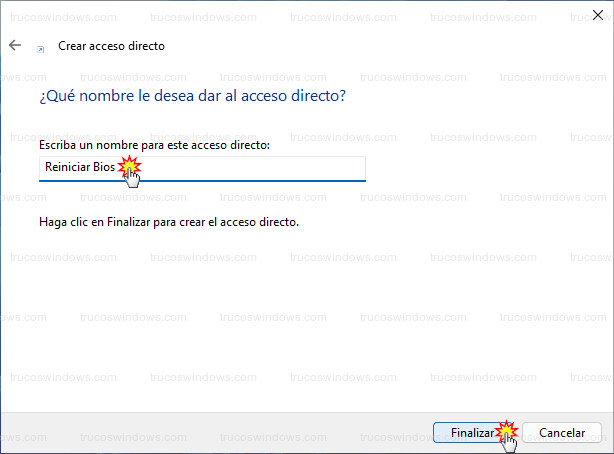
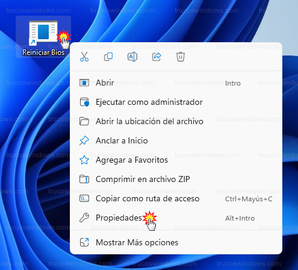
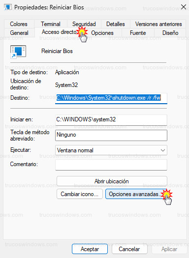
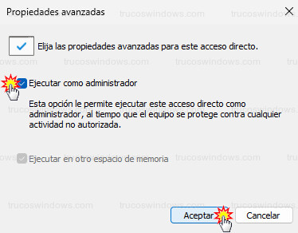
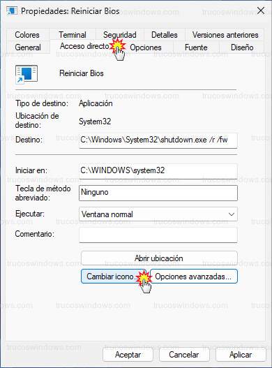
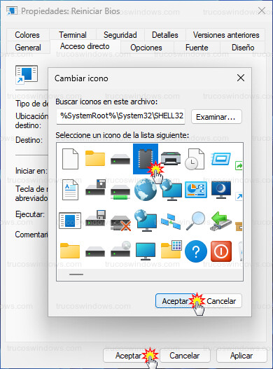
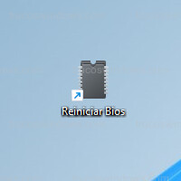

Ingresa a BIOS o UEFI
Ingresa a BIOS o UEFI Para acceder a la BIOS, al arrancar el equipo tenemos unos segundos para pulsar la tecla que indique el fabricante para entrar a la BIOS, normalmente la tecla Supr o F2, si en ese tiempo no se pulsa continuara la carga de Windows. Para más rapidez vamos a crear un acceso directo para acceder más rápido .

Empezando este Tutorial
- Vamos a crear un acceso directo, el cual apagará Windows y reiniciará el equipo entrando directamente a la BIOS/UEFI
- Damos al botón derecho del ratón en una zona libre del escritorio y seleccionamos, Nuevo > Acceso directo. 
- Escribimos el siguiente comando en la caja de texto y pulsamos en siguiente:
shutdown /r /fw /t 2 - shutdown, es el comando para apagar el equipo
- /r, es la opción para reiniciar
- /fw, es la opción para arrancar el firmware (BIOS/UEFI).
- /t 2 es el tiempo para que se reinicie el sistema en segundos 
- Escribimos un nombre para el acceso directo, por ejemplo, Reiniciar BIOS y pulsamos en Finalizar. 
Si queremos cambiar el icono
- En el icono de acceso directo que se ha creado, damos al botón derecho del ratón sobre y seleccionamos Propiedades 
- Aparecerá la ventana de propiedades en la pestaña Acceso directo, pulsamos en el botón Opciones avanzadas 
- Activamos la casilla de Ejecutar como administrador y aceptamos 
- Aún tendremos abierta la ventana de las propiedades en la pestaña de acceso directo, así que pulsamos en el botón Cambiar icono…. 
- Nos indicará que no tiene iconos el archivo, pulsamos en aceptar para que Windows muestre la lista de iconos
- Seleccionamos el que queramos, pulsamos en el botón aceptar y de nuevo en aceptar 
- Ya podemos ver nuestro acceso con el nuevo icono, que si lo ejecutamos nos llevará directamente a la BIOS/UEFI del equipo 
- Hay que tener en cuenta una cosa importante, si lo ejecutamos, previamente hay que guardar los trabajos que tengamos abiertos si no queremos perderlos.
×